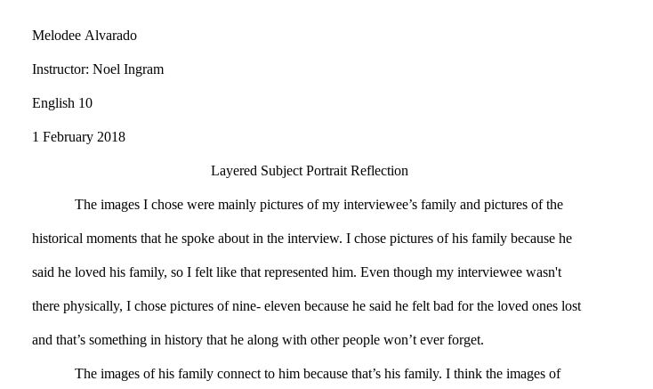

In Humanities, we were assigned to create a portrait of the person we interviewed, write a reflection, and choose something from the interview and write about an essay about it.
This is a portrait of the person I interviewed. The pictures in this collage are images that my interviewee talked about.

This is my reflection for the portrait I created. It talks about why I decided to place the images in the way I did.
In the image above is a screenshot of my essay that I wrote based on a something that my interviewee said.